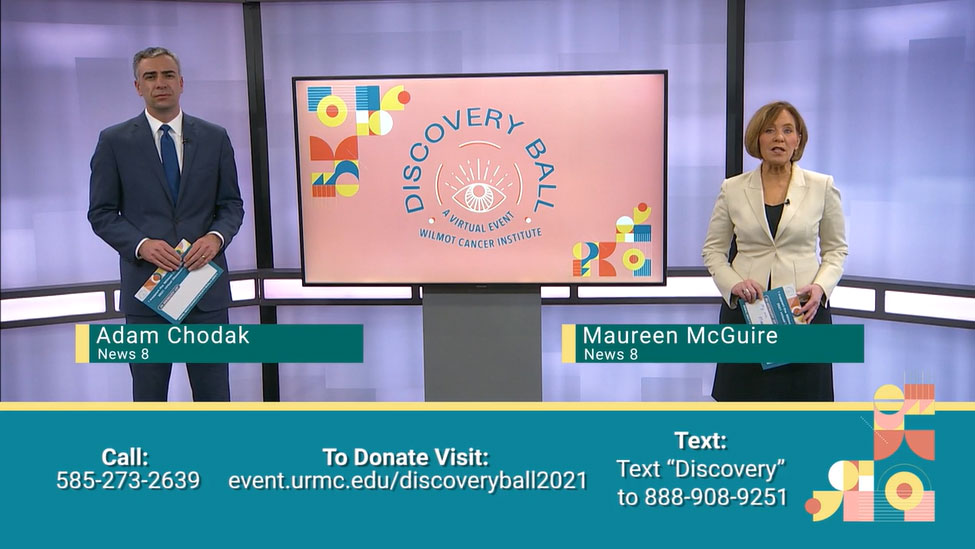
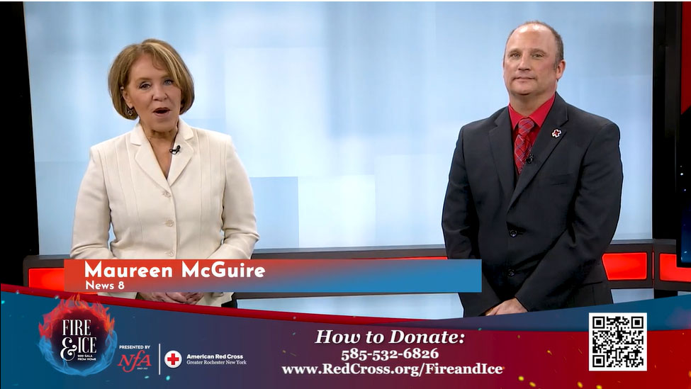
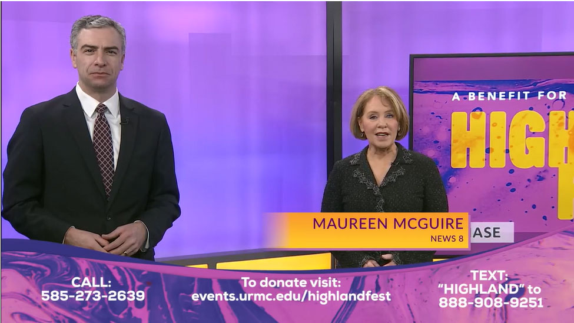
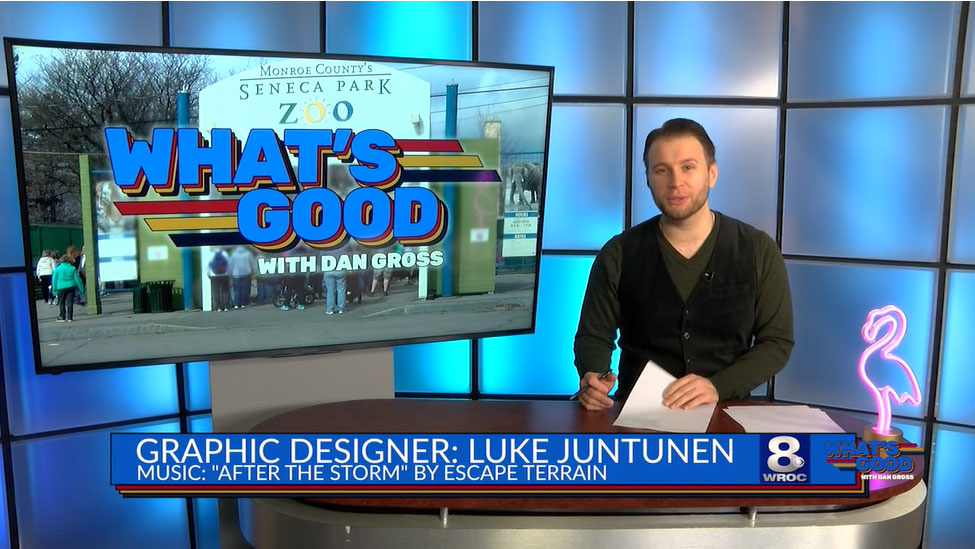
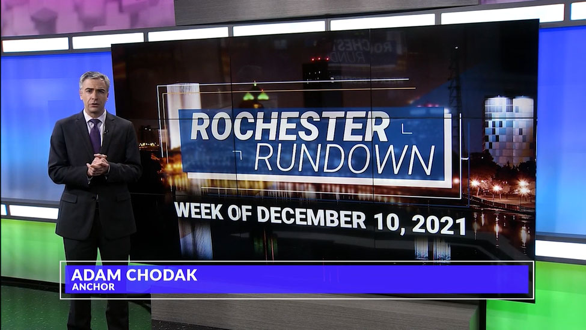
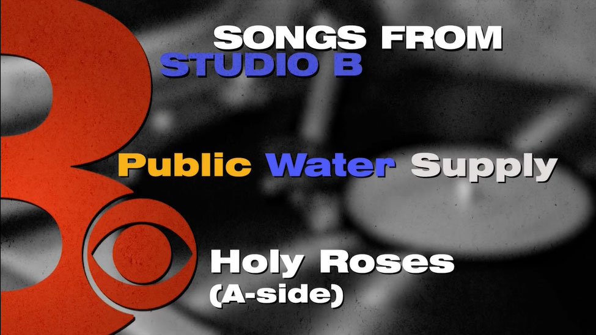

Channel 8 WROC
Special Productions
Graphics Packages
Built for RochesterFirst.com / WROC-TV
A selection of some of graphics packages I've put together for News 8/WROC special productions. I was the graphics lead on all of these projects and built all graphic elements myself either from scratch or heavily edited templates. For the majority of these, I built Monitor graphics, stinger video opens, informational lower 3rd graphics, and animated headline/nameplate lower 3rds.
Wilmot Cancer Institute: Discovery Ball Virtual Show

American Red Cross Fire & Ice Virtual Gala

Highland Hospital Highland Fest Virtual Gala

What's Good With Dan Gross

Rochester Rundown

Songs From Studio B

News 8 Presents: Senior Salute
All graphics are property of Nexstar Digital, WROC-TV and/or their respective clients.